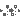
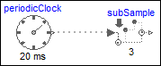
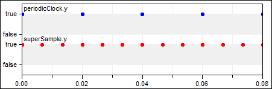

This package contains blocks that sub-sample, super-sample, and shift-sample a clock signal.
Extends from Modelica.Icons.Package (Icon for standard packages).
| Name | Description |
|---|---|
| Sub-sample the input clock and provide it as output clock | |
| SuperSample | Super-sample the input clock and provide it as output clock |
|  ShiftSample | Shift the input clock by a fraction of the last interval and provide it as output clock |
 Modelica_Synchronous.ClockSignals.Sampler.SubSample
Modelica_Synchronous.ClockSignals.Sampler.SubSample
This block sub-samples the input clock u and provides it as output clock y.
To be more precise: The clock y is factor-times slower than the clock u. The first activation of clock y coincides with the first activation of clock u. The sub-sampling factor is defined by Integer parameter factor.
The following
example
generates a periodic clock of 20 ms period, and
then sub-samples the resulting clock signal with a factor of 3:
|  | ||
| model | simulation result |
As can be seen, subSample.y picks every third-value of periodicClock.y due to the sub-sampling, and the sub-sampling factor = 3 is displayed in the icon of the subSample block. Note the down-arrow in the icon of the subSample block indicates that clock subSample.y is slower as clock subSample.u.
| Name | Description |
|---|---|
| factor | Sub-sampling factor (>= 1) |
| Name | Description |
|---|---|
| u | Connector of a clock as input signal |
| y | Connector of a clock as output signal (clock y is slower as clock of u) |
 Modelica_Synchronous.ClockSignals.Sampler.SuperSample
Modelica_Synchronous.ClockSignals.Sampler.SuperSample
This block super-samples the clock input signal u and provides it as clock output signal y.
To be more precise: Clock y is factor-times faster than clock u. The first activation of clock y coincides with the first activation of clock u. The super-sampling factor is defined by Integer parameter factor.
The following
example
generates a periodic clock of 20 ms period, and
then super-samples the resulting clock with a factor of 3:
 |
 | |
| model | simulation result |
As can be seen, superSample introduces factor-1 additional clock ticks for the output clock y. The super-sampling factor = 3 is displayed in the icon of the superSample block. Note the up-arrow in the icon of the superSample block indicates that clock superSample.y is faster as clock superSample.u.
| Name | Description |
|---|---|
| factor | Super-sampling factor (>= 1) |
| Name | Description |
|---|---|
| u | Connector of a clock as input signal |
| y | Connector of a clock as output signal (clock y is faster as clock of u) |
 Modelica_Synchronous.ClockSignals.Sampler.ShiftSample
Modelica_Synchronous.ClockSignals.Sampler.ShiftSample
This block shifts the first activation of clock output y by fraction shiftCounter/resolution of the period (or for a non-periodic signal by a fraction of the last interval). Here, shiftCounter and resolution are positive Integer parameters.
To be more precise: The block constructs (conceptually) a clock “cBase”
Clock cBase = subSample(superSample(u, resolution), shiftCounter)
and clock y starts at the second clock tick of cBase.
The following
example
generates a periodic clock of 20 ms period, and
then shifts it with shiftCounter = 4 and resolution = 3:
| model | simulation result |
The first activation of clock output y of block shiftSample1 is shifted in time (4/3*20ms). The parameter values shiftCounter = 4 and resolution = 3 are visible at the bottom of the icon.
| Name | Description |
|---|---|
| Shift first clock activation for 'shiftCounter/resolution*interval(u)' seconds | |
| shiftCounter | Numerator of shifting formula |
| resolution | Denominator of shifting formula |
| Name | Description |
|---|---|
| u | Connector of clock input signal |
| y | Connector of clock output signal |